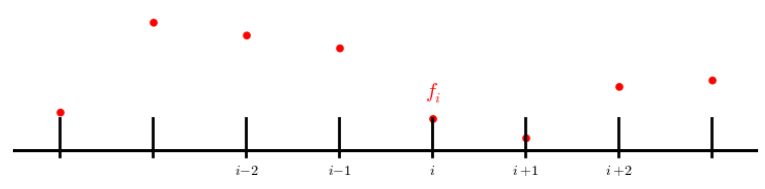
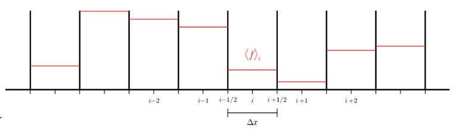
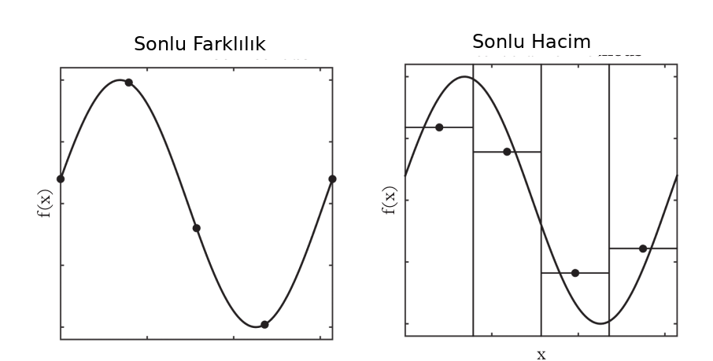
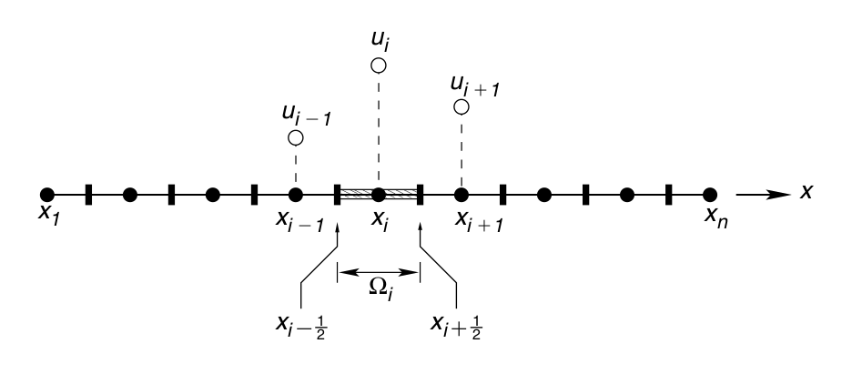
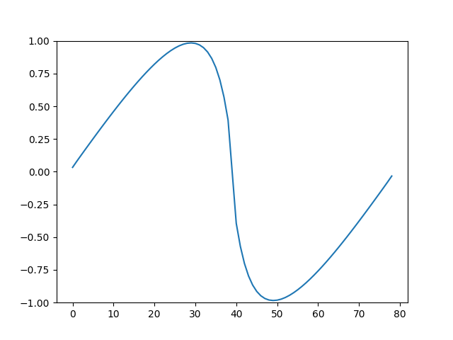
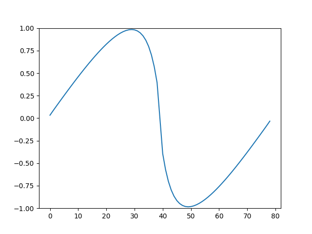

Sonlu Hacim (Finite Volume) Yöntemi - 2
Amaç bir diferansiyel denklemi sayısal olarak çözmek. Metot olarak sonlu farklılık (finite difference -FD-) yöntemi daha önce işlendi, bu yöntemde bir sürekli fonksiyonun değerlerini ayrıksal noktalar üzerinden temsil etmeye uğraşıyorduk. Bu noktalar bir ekseni eşit aralıklara bölerek ortaya çıkartılıyordu, mesela altta görülen bir tepeyle başlayıp inen $f$ fonksiyonu $i-2,i-1,i,..$ noktalarında $x_i$ değerleri üzerinden $u_i = u(x_i)$ ile tanımlanıyordu.

Sonlu hacim (FV) yönteminde durum biraz farklı; bir fonksiyonu belli noktalarındaki noktasal değerlerle değil, belli aralıklar arasında kalan değerlerinin averajı olarak temsil ediyoruz.

Farklı bir grafik

İki üstte görülen grafikte mesela $i$ ile $i+1$ noktası ortasındaki $i+1/2$ noktası ve $i$ ile $i-1$ noktası ortasındaki $i-1/2$ arasında kalan fonksiyonun averajı alınacak, ona $< u_i >$ ya da $\overline{u}_i$ diyoruz.
$$ \overline{u}_i = \frac{1}{\Delta x} \int{x_{i-1/2}}^{x_{i+1/2}} u(x) \mathrm{d} x $$
Dikkat; $i-1,i-2$ değerleri $i$ referanslı olduğu için eksi içerikli, $i=4$ olsaydı onlar $3,2,..$ diye gidebilirdi. Ayrıca FD yönteminin aksine, indis değerlerine tekabül eden $x_i,x_{i+1}$ değerleri herhangi bir yerde olabilir, böylece eşit aralıklı olmayan ızgaralarla çalışmamız mümkün olur, bu FV yönteminin kuvvetlerinden biri.
Gerçi biz bu anlatımda ve kodda eşit aralık farz edeceğiz, $\Delta x$, $h_x$ burada devreye girer.

Muhafaza Kanunu Hesaplamak
Notasyonda $f$ akış (flux) için kullanılır [2], $\Delta x$ için $h_x$,
$$ \overline{u}_i = \frac{1}{h_x} \int{x_{i-1/2}}^{x_{i+1/2}} u(x) \mathrm{d} x \qquad (1) $$
[5] yazısında muhafaza kanununun entegral formunu görmüştük,
$$ \int_{x_1}^{x_2} \rho(x,t_2) \mathrm{d} x = \int_{x_1}^{x_2} \rho(x,t_1) \mathrm{d} x + \int_{t_1}^{t_2} \rho(x_1,t) v(x_1,t) \mathrm{d} t - \int_{t_1}^{t_2} \rho(x_2,t) v(x_2,t) \mathrm{d} t $$
$f(\rho) = \rho(x,t) v(x,t)$ denebilir, ya da herhangi daha genel olarak $\rho$ yerine herhangi bir ölçüm $u$ için $f(u) = u(x,t) v(x,t)$, o zaman, ve biraz yer değişim sonrası,
$$ \int_{x_1}^{x_2} u(x,t_2) \mathrm{d} x - \int_{x_1}^{x_2} u(x,t_1) \mathrm{d} x + \int_{t_1}^{t_2} f(x_2,t) \mathrm{d} t - \int_{t_1}^{t_2} f(x_1,t) \mathrm{d} t = 0 $$
Bu formülü her sonlu hacim hücresi için kullanacağız. Zaman indisleri $t,t+1$ olacak, üstte $t_1,t_2$ yerine. Yer için $x_1,x_2$ yerine bir $j$ indisi merkezli $x_{j-1/2}$ ve $x_{j+1/2}$. Devam edelim, $u(x_1,t_1)$ içinde $x_{j-1/2}$ ve $t_l$ oluyor, (zaman $l$ indisi) ona da $u_{j-1}^l$ diyelim. $x_2$ yerine $x_{j+1/2}$, sonuncuda zamanın hala değişken olduğu durum $u_{j+1}$ olsun. Eğer $x$ değişken ise, zaman indisi $t_2 = t_{l+1}$ için $u^{l}$. Üstteki formülü bu notasyonla değiştirip istenen zaman ve yer aralıklarına uygularsak,
$$ \int_{x_{j-1/2}}^{x_{j+1/2}} u^{l+1} \mathrm{d} x - \int_{x_{j-1/2}}^{x_{j+1/2}} u^{l} \mathrm{d} x + \int_{t_l}^{t_{l+1}} f(u_{j+1/2}) \mathrm{d} t - \int_{t_l}^{t_{l+1}} f(u_{j-1/2}) \mathrm{d} t = 0 $$
Her şeyi $h_x$ ile bölelim,
$$ \frac{1}{h_x} \int_{x_{j-1/2}}^{x_{j+1/2}} u^{l+1} \mathrm{d} x - \frac{1}{h_x} \int_{x_{j-1/2}}^{x_{j+1/2}} u^{l} \mathrm{d} x + \frac{1}{h_x} \int_{t_l}^{t_{l+1}} f(u_{j+1/2}) \mathrm{d} t - \frac{1}{h_x} \int_{t_l}^{t_{l+1}} f(u_{j-1/2}) \mathrm{d} t = 0 $$
Bu formülde (1)'de tanımlanan ortalama formunu görüyoruz, kısaltma amaçlı $\overline{u}_{j,l}$ notasyonu oralarda kullanabiliriz,
$$ \overline{u}_{j,l+1} - \overline{u}_{j,l} + \frac{1}{h_x} \int_{t_l}^{t_{l+1}} f(u_{j+1/2}) \mathrm{d} t - \frac{1}{h_x} \int_{t_l}^{t_{l+1}} f(u_{j-1/2}) \mathrm{d} t = 0 $$
Şimdi son iki terime dikkat edelim, bu iki entegral zaman üzerinden alınıyor, fakat Riemann problemini hatırlarsak çözüm $u(x,t)$ sadece $x/t$ değişkeni üzerinden düşünülebilir, ve eğer $x$ değişmiyorsa (ki öyle çünkü üstteki iki entegral $t$ üzerinden, $x$ aynı) o zaman $\mathrm{d} t$ üzerinden entegral yerine, sabit $u$ ile bir ayrıksal $h_t$ çarpımı yeterlidir. Öyle ya sabit $u$ üzerinden ve yine sabit / bilinen $t$ adımı $h_t$ üzerinden alan bir dikdörtgendir, bu alanın hesabı için çetrefil entegral yerine direk çarpım yeterli.. Mesela ilk entegral,
$$ \frac{1}{h_x} \int_{t_l}^{t_{l+1}} f(u_{j+1/2}) \mathrm{d} t = \frac{h_t}{h_x} f(u_{j+1/2}) $$
olarak hesaplanabilir, çünkü $u$ değeri $x = x_{j \pm 1/2}$ üzerinde değişmiyor. Aynı durum ikinci entegral için de geçerli, o zaman iki üstteki formül
$$ \overline{u}_{j,l+1} = \overline{u}_{j,l} - \frac{h_t}{h_x} ( f(u_{j+1/2}) - f(u_{j-1/2}) ) \qquad (2) $$
olacak. Böylece $l$ anındaki $j$ hücresinin ortalamasını bir sonraki zaman adımı $l+1$'e nasıl aktaracağımızı, oraya geçiş yapacağımızın formülünü bulmuş olduk.
Eğer $\frac{1}{h_x} \int_{t_l}^{t_{l+1}} f(u_{j+1/2}) \mathrm{d} t$ entegralini entegral içindekiler çarpı $h_t$ ile gösterebiliyorsak, tüm entegrali $h_t$ ile bölmek bize yaklaşık, "sayısal" bir $f(u_{j+1/2})$ verecektir, ona büyük harf ile $F_{j+1/2}^l$ diyelim, formülü [4, sf. 103]
$$ F_{j+1/2}^l = \frac{1}{h_t} \int_{t_l}^{t_{l+1}} f(u_{j+1/2,l}) \mathrm{d} t $$
$F$'ye sayısal akış (numerical flux) ismi de veriliyor. O zaman (2) formülü "akış diferansiyel formunda" da yazılabilir,
$$ \overline{u}_{j,l+1} = \overline{u}_{j,l} - \frac{h_t}{h_x} ( F_{j+1/2,l} - F_{j-1/2,l} ) $$
Sayısal akışı elde etmek için bize bir sayısal $u$ lazım, bunu FV ile bulacağız, sonra bu $u$'ları bildiğimiz $f()$ akışına verince sayısal $F$ elde edilecek.
Bu kod alttaki gibidir,
import scipy.integrate as integrate
import matplotlib.pyplot as plt
import numpy as np
alpha = 0.0
beta = 1.0
def init(z, alpha, beta):
return alpha + beta*np.sin(z)
#
# u_t + f(u)_x = 0 denklemi icin akis (flux) fonksiyonu
#
def flux(u):
return 0.5*u**2
def godunov_flux(uval):
fhat = np.zeros((len(uval),1))
for i in range(0,len(uval)-1):
ul = uval[i]; ur = uval[i+1]
s=(ul+ur)/2;
if ul > ur:
if s < 0:
fhat[i] = flux(ur)
else:
fhat[i] = flux(ul)
elif ul < ur:
if ur < 0:
fhat[i] = flux(ur)
elif ul > 0.:
fhat[i] = flux(ul)
else:
fhat[i] = 0
return fhat
a = 0
b = 2*np.pi
N = 80
T = 2.0
x = np.linspace(a,b,N)
dx = (b-a)/(N-1);
u = np.zeros((len(x)-1,1));
for i in range(0,N-1):
u[i] = (1.0/dx)*integrate.quad(init, x[i], x[i+1], args=(alpha,beta))[0]
dt = dx/(2*np.amax(np.amax(u)))
t = 0.0
i = 0
while t < T:
fR = godunov_flux(u)
fL = np.roll(fR,1)
u -= dt/dx*(fR - fL)
t = t+dt
i += 1
if i % 5 == 0:
plt.figure()
plt.plot(u)
plt.ylim(-1,1)
plt.savefig('/tmp/out-%03d.png' % i)
plt.close('all')
Kodda ilk önce başlangıç fonksiyonu tanımlandı, içinde sinüs olan init
bu; Bu fonksiyonun hücre bazında integrate.quad ile entegrali alındı,
böylece her hücreyi temsil eden o tek değeri elde ettik.

FV yöntemi bundan sonra o hücreler üzerinden hesabını yapacak, dinamik denklemi zamanda ilerletirken bunun hücrelerdeki o temsili değer üzerinden yapacak.
Hücrelerin FV matematiği şöyle; mesela yanyana iki hücreye bakarsak, üstteki resimde $x_{i-2}$ ve $x_{i-1}$ diyelim, soldan ilk iki hücre, bu iki değer sanki bir Riemann problemini andırmıyor mu? Evet; ve Godunov'un icat ettiği FV çözümü için kullanılan teknik te zaten budur. İki hücre ortasındaki $x_{i-1/2}$ noktası hücre sınırı kabul edilir ve önceki sonraki değerler $u_L$ ve $u_R$ imiş gibi Riemann çözümü işletilir. Bu işlem tüm yanyana hücreler için işletilince bir zaman dilimi çözümü elde edilir, sonraki zaman dilimi için bu işlem tekrar baştan hesaplanır.
Şimdi $x_{i}$ ile $x_{i+1}$ arasındaki $x_{1+1/2}$ sınırını baz alıp, ve [3]'teki Riemann çözümünü baz alarak şunu yazalım [4, sf. 109],
$u_i^l \ge u_{i+1}^l$ için,
$$ u^\star_{i+1/2} = \left\{ \begin{array}{lll} u_i^l & \textrm{eğer} & s > (x-x_{i+1/2}) / t \\ u_{i+1}^l & \textrm{eğer} & s < (x-x_{i+1/2}) / t \end{array} \right. $$
Daha önce gördük $s$ dalga hızı, bu örnekte $s = (u_i^n + u_{i+1}^n)/2$.
$u_i^l < u_{i+1}^l$ için,
$$ u^\star_{i+1/2} = \left\{ \begin{array}{lll} u_i^l & \textrm{eğer} & (x-x_{i+1/2})/t \le u_i^l \\ (x-x_{i+1/2})/t & \textrm{eğer} & u_i^l < (x-x_{i+1/2})/t < u_{i+1}^l \\ u_{i+1}^l & \textrm{eğer} & (x-x_{i+1/2})/t \ge u_{i+1}^l \\ \end{array} \right. $$
Bir kez Riemann çözümü elde edilince Godunov sayısal akışı $u^\star_{i+1/2}$ ile kolayca hesaplanabilir, akış fonksiyonu $f()$ üzerinden $F = f(u^\star_{i+1/2})$.
Üstteki formülleri daha da kolaylaştırmak mümkün, Godunov akışlarını $x = x_{i+1/2}$ noktasında hesapladığımız için bunu formülde $x$ yerine koyunca,
$u_i^l \ge u_{i+1}^l$ için,
$$ u^\star_{i+1/2} = \left\{ \begin{array}{lll} u_i^l & \textrm{eğer} & s > 0 \\ u_{i+1}^l & \textrm{eğer} & s < 0 \end{array} \right. $$
$u_i^l < u_{i+1}^l$ için,
$$ u^\star_{i+1/2} = \left\{ \begin{array}{lll} u_i^l & \textrm{eğer} & 0 \le u_i^l \\ (x-x_{i+1/2})/t & \textrm{eğer} & u_i^l < 0 < u_{i+1}^l \\ u_{i+1}^l & \textrm{eğer} & 0 \ge u_{i+1}^l \\ \end{array} \right. $$
Kod içinde üstte görülen hesabı tüm hücreler için yaptık, $i$,$i+1$,$i+2$.. ve
$F_{j+1/2,l}$ hesabından bir önceki $F_{j-1/2,l}$, kod içinde önceki fL
sonraki fR, onun için np.roll ile vektör içindeki değerleri bir
ilerleterek önceki ve sonraki hücrelerin aynı hizaya düşmesini sağlıyoruz
böylece $F_{j+1/2,l}-F_{j-1/2,l}$ hesabı kolay bir şekilde fR-fL
ile bulunabiliyor.
Belli $t$ anlarından alınmış görüntüler altta bulunabilir.

 


Animasyon [1],
! convert -delay 20 -loop 0 /tmp/out-*.png wave.gif
Kaynaklar
[1] Bayramlı, Animasyon, Godunov Sonlu Hacim Yontemi ile Burgers Denklem Cozumu https://github.com/burakbayramli/classnotes/raw/master/compscieng/compscieng_bpp50fv2/wave.gif
{kind=link}
[2] Kloeckner, Numerical Methods for Partial Differential Equations CS555 / MATH555 / CSE510 https://relate.cs.illinois.edu/course/cs555-s20/
[3] Bayramlı, Sonlu Hacim (Finite Volume) Yöntemi - 1
[4] Lee, Computational Fluid Dynamics
[5] Bayramlı, Fizik, Gazlar, Sivilar - 2
Yukarı